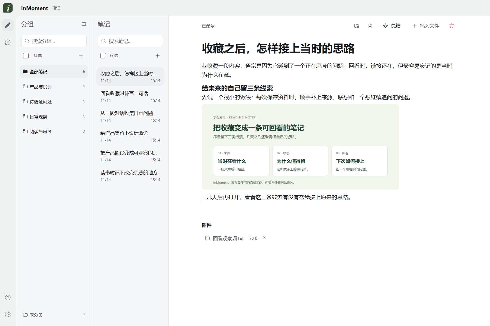

下载后怎样安装
打开安装包，点击「立即安装」。如需更改安装位置或创建桌面快捷方式，先打开「安装选项」。安装完成后，点击「打开 InMoment」。
如果电脑需要补装 Visual C++ 运行库，安装器会在你确认后从微软下载。
版本信息
- 版本
- 1.0.0 稳定版
- 系统
- Windows 11 x64
- 文件名
- InMoment-Setup-1.0.0-x64.exe
第三方许可与源码
随软件分发的依赖沿用现有版本，对应文件保留原发布名称。

打开安装包，点击「立即安装」。如需更改安装位置或创建桌面快捷方式，先打开「安装选项」。安装完成后，点击「打开 InMoment」。
如果电脑需要补装 Visual C++ 运行库，安装器会在你确认后从微软下载。
随软件分发的依赖沿用现有版本，对应文件保留原发布名称。